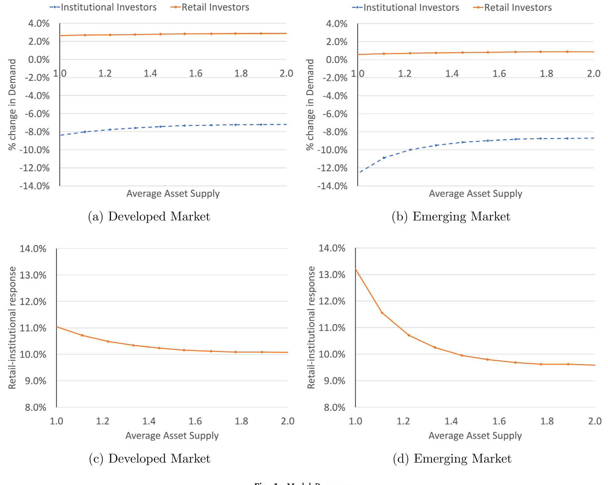
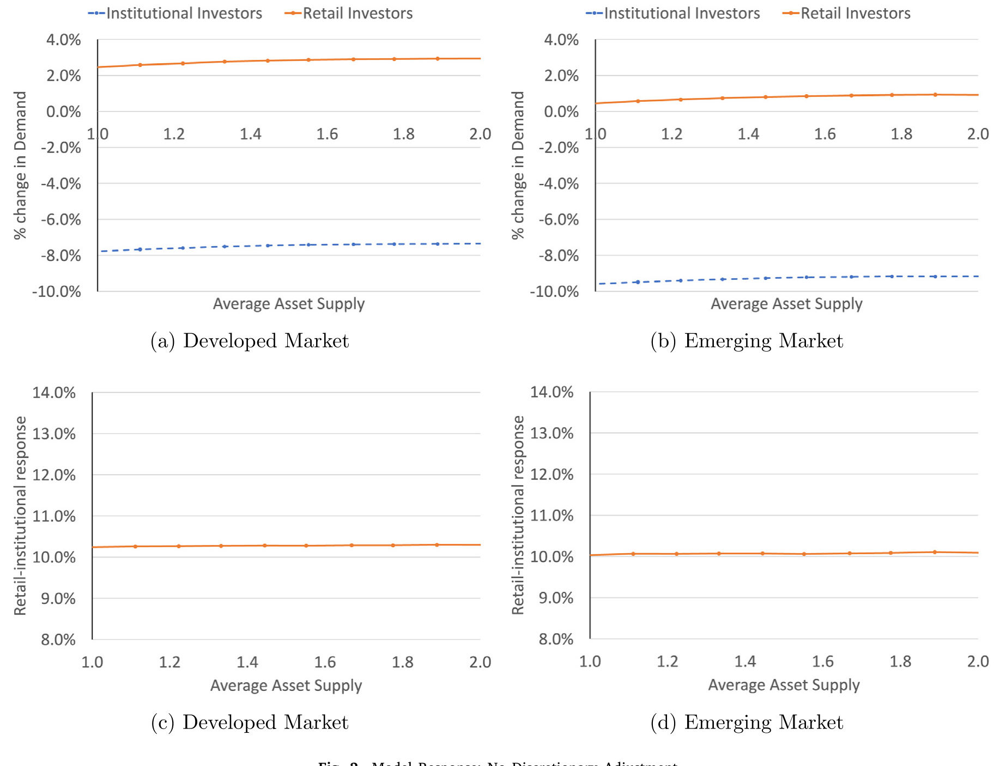
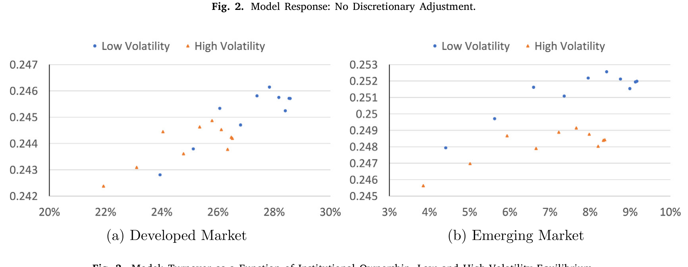
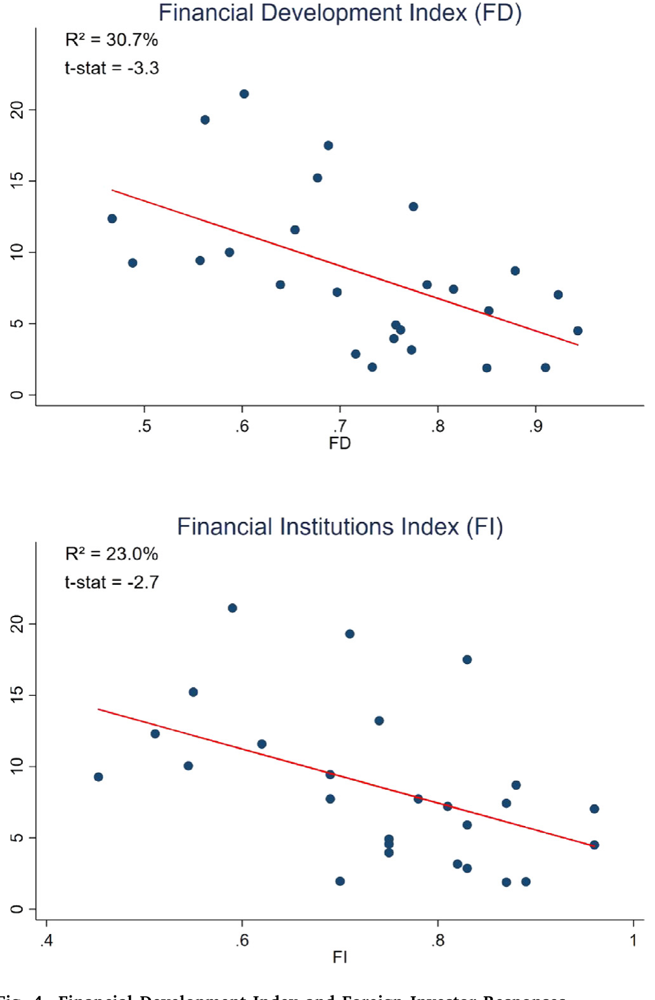
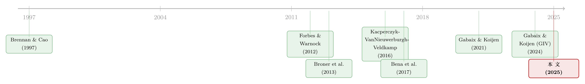

高波动来袭，谁在悄悄换仓？——把「资本外逃」拆到每一个投资者、每一只股票
本文读的是 Kacperczyk, Nosal & Wang (2025, Journal of Financial Economics)：当全球波动率升高时，机构投资者会从股票中「撤退」，但这种撤退并非全线压价的一刀切——他们系统性地从小盘、低波动股票转向大盘、高波动股票。作者用覆盖 41 个经济体、近 3 万家公司的投资者—公司层面持仓数据证明，这种再平衡的弹性比加总数据大了一个数量级，且主要由经理人自主决策（discretionary）驱动，而非赎回或委托约束。机制是一套带有信息容量异质性的学习模型：危机里，大票与高波动票的「学习收益」更高，于是更聪明的钱往那里搬。
1 一个老问题，和一个被加总数据「藏起来」的真相
每逢全球市场动荡，我们都会听到同一个故事：聪明钱「跑路」了。学术上，这叫资本回撤（retrenchment）——Forbes 和 Warnock (2012)、Broner 等 (2013) 用国别层面的跨境资金流告诉我们，全球风险一上来，国际资本就大规模、顺周期地往外撤。这个事实本身没什么争议。
但问题在于：加总数据只能告诉你「钱走了多少」，却说不清「为什么走、谁在走、从哪只股票走」。
这正是石川式叙事里最爱的那种张力：一个看似铁板钉钉的宏观规律，背后其实藏着一团没被打开的黑箱。Kacperczyk、Nosal 和 Wang 这篇文章的全部用力之处，就是把这团黑箱一层层拆到极细的颗粒度——细到每一个机构、每一个季度、每一只它持有的股票。
首先要问的是：当我们说「资本外逃」时，我们到底在说什么？是基金经理主动看空、调仓走人（自主决策）？还是他背后的客户赎回、监管约束、委托授权（mandate）逼着他卖（非自主）？加总数据里，这两件事被搅成了一锅粥。而它们对政策的含义截然不同：前者你要管的是经理人的信息与激励，后者你要管的是赎回机制与杠杆约束。
接着，一个更尖锐的问题浮出来：所谓「撤退」，真的是不分青红皂白地把整个组合往外倒吗？如果是，那它就只是一场组合层面的甩卖（portfolio-wide fire sale）；可如果撤退是有选择的——某些股票被砍得多、某些被砍得少，甚至有些反而被加仓——那背后就不是恐慌，而是信息在起作用。
这篇论文的答案是后者。而且这个「有选择」的方向，恰恰和直觉相反。
2 数据：把全世界的机构持仓摊开在桌面上
要回答上面的问题，你需要的不是国别加总，而是谁持有谁、持有多少、什么时候变的。作者用的正是这样一套投资者—公司层面的机构持仓数据，涵盖共同基金、银行信托、养老金、保险公司和主权财富基金。
- 样本期：
2000–2020，按季度更新； - 覆盖
41个经济体、30,230家公司、13,145个机构组合； - 只保留普通股（剔除优先股、
ADR、GDR，双重上市只留主上市地）； - 与 IMF 的协调组合投资调查（CPIS）相比，样本平均覆盖了约
60%的股权市值——考虑到 IMF 口径含各类股权而本文只算普通股主上市，实际覆盖率更高。
核心变量定义得很干净：机构 \(j\) 在 \(t\) 季度对公司 \(i\) 的持股比例记为 \(IO_{i,j,t}\)；资金流（equity flow）就是它的对数变化 \(\Delta Log(IO)\)。当机构与所持公司不在同一国时，外资哑变量 \(FOR=1\)。控制变量包括公司规模 \(Logsize\)、季度内日收益波动 \(Vol\)、账面市值比 \(BM\)、杠杆、换手率 \(Turnover\)、盈利能力等，所有变量在 1% 水平缩尾。
而那个贯穿全文的「冲击」，是全球波动率 \(Gvol\)：基于 MSCI ACWI 全球指数日收益、按季度末计算的已实现波动率。作者特意强调，\(Gvol\) 与各国本地波动率、期权隐含波动率 VIX、以及 Ludvigson 等 (2021) 的金融不确定性指数都高度相关——它不是某个小众指标的产物。
3 识别策略：从「公司层面」一路杀到「投资者—公司层面」
这篇文章的识别逻辑，是一个逐层逼近的过程，每加一层固定效应，就剥掉一种竞争性解释。看懂这条递进链，就看懂了全文。
第一步，公司层面。 把公司层面持股比例的百分比变化对 \(Gvol\) 回归，加入公司固定效应。这一步能吸收掉所有国别层面的扰动——汇率水平与波动、利率、本地市场波动——从而把焦点从宏观推到「公司—投资者」层面；公司固定效应再吸收掉「市场对某些资产的稳定偏好」这类时不变的异质性。结论：高波动期，机构总体上确实在降低平均持仓，发达和新兴市场皆然，只是发达市场幅度较小。
接着，一个自然的问题是：公司层面的结果，会不会只是「投资者构成」在变？比如波动一来，组合反应迟钝的那批投资者更愿意留在场内，于是公司层面看到的「弱反应」其实是构成效应的假象。要排除它，必须下沉到投资者—公司层面。
于是反转出现。 当作者把「公司层面变异」换成「公司—投资者层面变异」后，机构资金流对 \(Gvol\) 的反应翻了一倍以上；再用公司—投资者固定效应锁住「哪些公司被选进哪些组合」这层稳定选择后，效应又增长了近 50%。最关键的一跳是加入投资者×时间固定效应：它把每个机构在每个季度的整体进出（赎回、宏观择时、组合授权）全部吸收掉，只留下「同一个机构、同一个季度、在不同股票之间的相对取舍」。这一步之后，估计出的资金流反应放大了整整一个数量级。从公司层面到投资者—公司层面，发达市场的弹性放大了约 5 倍，新兴市场约 6 倍。
这个数量级的跳跃本身就是一个发现：它说明加总/公司层面数据里，投资者的构成是偏向「低敏感度」那一端的，于是系统性地低估了真实的微观弹性。
把最饱和的那个设定写出来，长这样——
注意 \(Gvol_t\) 本身的主效应被 \(\eta_{j,t}\)（投资者×时间）吃掉了——识别完全来自「同一机构、同一季度、横跨不同股票」的横截面变异。这正是为什么作者敢说自己捕捉的是自主决策成分：赎回和授权这类外生压力，在投资者×时间这个维度上已经被差分掉了。一个能够威胁结果的遗漏变量，必须在「机构—公司—时间」三重层面上变动，而不能只在公司—时间、投资者—时间或公司—投资者层面，否则早被固定效应吸收。
4 主要结果：一场方向被搞反的「质量飞跃」
把上面的回归跑出来，核心图景是这样的：
高波动期，机构从小盘、低波动股票撤得更狠，而相对增持大盘、高波动股票。 控制了规模之后，往高波动资产再平衡的倾向依然显著存在。这一点很反直觉——传统「飞向质量」（flight-to-quality）讲的是危机里大家逃向安全、低波动的资产；可这里看到的，是更有信息的钱在往高波动资产搬。作者把它叫作一种信息驱动的飞向质量：表面上像逃顶，骨子里是按信息租金重新配置。
再把投资者分成本国与外资，故事更精彩。在全样本里，本国和外资机构都倾向于减持小盘、低波动股票。但一旦把样本限定在新兴市场，外资机构对小盘股的减持就显著超过本国机构。这与「在新兴市场，外资相对更有信息、因而对全球不确定性更敏感」的假说一致——这也正好接上了 Kacperczyk、Sundaresan 和 Wang (2021) 关于外资是否提升价格效率的那条线。
异质性还体现在「谁更会这么做」上：管理规模更大、更主动管理、上一年业绩更好的投资者，往大盘再平衡的倾向更强；而且这些「更有信息容量」的投资者，在新兴市场比在发达市场更敏感。连广延边际（extensive margin）也对得上——高波动期，更老练的投资者倾向于建仓大盘、清仓小盘。
5 机制：当「注意力」成了稀缺资源
为什么撤退会是「有选择」的？作者给出的解释，是一套建立在 Kacperczyk、Nosal 和 Stevens (2019) 框架之上、带有信息容量（information capacity）异质性的均衡学习模型。这一节是全文的「内核」，值得慢讲。
设定上，市场里有两类投资者：机构与散户，他们在规模、风险厌恶上不同，更重要的是在处理资产信息的能力上不同。基于已有证据（Bena 等, 2017；Kacperczyk 等, 2021），模型假定并在数据里验证：机构比散户更有信息。投资者要在一组规模与收益波动各异的风险资产上，同时做两件事——学习（把有限的信息容量分配到哪些资产上）和交易。
关键的直觉在于「学习收益」（learning gains）在资产间并不均等：
- 对大盘股而言，价格对持仓的敏感度低、对学习的敏感度也低，于是多学一点能换来的超额收益更高；
- 对高波动股而言，无条件风险溢价高，学清楚它的回报也更大。
而当全球波动率冲击来临——模型把它刻画为「资产收益的总体波动率上升」叠加「机构风险厌恶上升」——上面两类股票的学习收益同时被推高。于是有限的注意力被重新分配到大盘、高波动资产上，交易随之跟过去。这就内生地产生了「从小盘/低波动搬向大盘/高波动」的横截面再配置。

Figure 1: Model Response
这里有一处特别漂亮、也特别能证伪的设计：作者指出，这种横截面模式严重依赖学习对冲击的内生反应。如果你把模型改成外生学习（投资者的信息分配固定、不随冲击调整），这种再配置就消失了。

Figure 2: Model Response: No Discretionary Adjustment
换句话说，光有「风险厌恶上升导致市场普跌」是不够的——那只会带来全线、同向的卖出，不会产生跨资产的差异化撤退。能解释「为什么小盘被砍得比大盘多」的，只有学习的内生再分配。这一对照（图 1 vs 图 2），把「信息机制」和「单纯风险厌恶/本土偏好机制」干净地切开了。
模型还吐出一个可以直接拿去验证的、稳健的横截面预测：机构持股比例越高的股票，换手率越高——而且这个正相关关系在高波动均衡下更陡。

Figure 3: Model: Turnover as a Function of Institutional Ownership, Low and High-Volatility Equilibrium
把模型推到「投资环境」这一维，又能解释外资与新兴市场那条结果：当机构的信息优势取决于其所处环境时，由于新兴市场里机构相对散户更老练，学习对其持仓的影响也就更大——于是外资在新兴市场的反应更剧烈。作者还用一个金融发展指数把这层异质性画了出来。

Figure 4: Financial Development Index and Foreign Investor Responses
这正是微观数据相对加总数据的根本价值所在：加总层面，「风险厌恶冲击导致普跌」和「信息驱动的差异化撤退」会给出几乎一样的资金外流；只有在横截面上——不同规模、不同波动、不同投资者的股票被区别对待——两种机制才分道扬镳。这篇文章能做出区分，靠的就是那个新增的横截面维度。
6 内生性：波动率是「因」还是「果」？
一个聪明的读者立刻会担心：\(Gvol\) 和资金流之间会不会是反向因果——是机构的抛售本身推高了全球波动率？
作者的第一道防线，是数据的颗粒度本身：要威胁识别，遗漏变量必须在「机构—公司—时间」三重层面变动，而这早已被高维固定效应吸收。第二道防线是换测度：他们用四种替代的不确定性指标（全球金融危机/COVID 哑变量、金融不确定性指数、VIX、滞后的全球波动率）重跑，结论几乎不变。
但真正硬的，是两个工具变量：
- 颗粒工具变量（Granular Instrumental Variable, GIV，Gabaix & Koijen, 2024）：用大盘股的特异性换手率作工具——大公司的特异冲击会有总量含义，但不太可能通过其他渠道直接驱动单只小股票的资金流；
- 货币政策「新闻」冲击（Nakamura & Steinsson, 2018 的 MPS）：高频识别出的美国货币政策意外。
两个工具对 \(Gvol\) 都有显著正向的一阶效应（满足相关性），也都有可信的外生性（满足排他性）。用它们重做横截面回归，估计系数在两个工具间彼此接近，且仅比基准面板估计略微偏高——这说明结果并未被 \(Gvol\) 的内生性严重污染。
7 收尾：撤退之后，公司变得更稳还是更不稳？
文章最后绕回开头那个宏观关切：这些资金流，对金融稳定意味着什么？作者用公司层面的股票收益波动和换手率来衡量稳定性，发现机构流出与未来公司波动上升、换手下降相联系——也就是说，机构资金的存在反而起到了稳定作用。波动率这一效应在发达和新兴市场都成立；换手率的效应则主要出现在发达市场。
把这一点和前面「外资平均而言从大盘撤得更少」拼起来，一个温和但重要的推论是：大公司或许确实从外资的在场中受了益。这与「外资是蝗虫」的悲观叙事正好相反——在这条证据线上，外资更像是稳定器，而非破坏者。
8 文献脉络：从「国别加总」到「每一笔持仓」
把这篇文章放进它所在的谱系里看，它的位置就格外清楚。
最早，这条线是宏观国际金融的领地：Forbes 和 Warnock (2012)、Broner 等 (2013)、Fratzscher (2012) 用国别加总的跨境资金流，确立了「全球风险→资本回撤」这个核心事实；Avdjiev 等 (2018) 按部门（公共、银行、企业）拆债务流，Chari 等 (2022) 盯住新兴市场资金流分布的尾部。它们共同的局限，是加总数据说不清机制。
接着，一批研究开始关心「自主 vs 非自主」的区分：Shek、Shim 和 Shin (2018) 发现债券基金经理的自主卖出是总卖出的重要部分，Raddatz 和 Schmukler (2012) 也把一部分跨国再配置归因于基金经理的决策。
然后，利用横截面变异的研究还很稀疏，仅有 Hau 和 Lai (2017)（危机中困境基金转向流动性股票，但数据加总到公司层面）与 Coppola 等 (2021)（全球企业经由海外子公司融资）等少数例外。
与此并行的，是资产管理需求体系这条线：Gabaix 和 Koijen (2021) 的「无弹性市场假说」指出机构资金流的价格弹性很低，并归因于机构约束；Koijen、Richmond 和 Yogo (2023) 进一步问「哪些投资者对估值真正重要」。本文与它们呼应，但把焦点从「估计加总弹性」转向「测量跨投资者类型、跨资产的自主资金流反应」（关于需求弹性为何可以被拆成两半，可参见《为什么「理性投资者」也会拒绝换股？》）。
理论上，本文站在 Kacperczyk、Nosal 和 Stevens (2019)、Kacperczyk、Van Nieuwerburgh 和 Veldkamp (2016) 的理性注意力配置框架之上，区别于 Brennan 和 Cao (1997)、Albuquerque 等 (2007, 2009) 那类外生信号、单国单资产的设定——多资产的内生学习，才是它能对上数据横截面的关键。

于是，这篇论文的位置就定下来了：它是这条脉络里第一个把国际组合资金流推到公司—投资者层面、并用一个内生学习模型把「信息机制」从「风险厌恶机制」中识别出来的工作。它对机构持股如何影响资产稳定的证据，也接上了 Gompers 和 Metrick (2001)、Gabaix 等 (2006) 那条「机构所有权与资产价格」的老线（关于「谁持有」如何决定价格，亦可参见《谁在持有这张债券，决定了它的价格》）。
9 评论与延伸（Q&A + 研究方向）
(a) 几个可能的疑问
Q：所谓「自主决策」成分，真的被干净地分离出来了吗？会不会只是另一种约束的伪装？
作者的做法是用投资者×时间固定效应吸收掉一切在「机构—季度」层面同向的东西——赎回、宏观择时、整体组合授权。剩下的识别变异是「同一机构、同一季度、不同股票间」的相对取舍。这在概念上确实更接近「自主」。但要小心：如果某机构的授权是风格化的（例如「在波动期降低小盘暴露」这类规则），它会在公司—时间维度上对所有持有该机构的人同向变动，未必被完全吸收。所以更准确的说法是：被分离的是「不能被机构整体进出解释的、跨资产的相对调仓」，把它全部等同于经理人的主观信息判断，仍需谨慎。
Q：「飞向高波动」会不会只是机制性的再平衡假象——大跌后小盘跌得多，被动按权重买回大盘？
这是最该担心的混淆。作者控制了规模与一系列公司特征、并用公司（及公司—投资者）固定效应，试图把「机械再平衡」剥离。但被动权重再平衡本身会产生「跌多的少卖、跌少的多卖」的模式，与结果方向未必完全正交。模型中「外生学习下效应消失」的对照是有力的间接证据，不过这是模型内的反事实，不是数据里的安慰剂。
Q：用 MSCI ACWI 的已实现波动率作全球冲击，和直接用 VIX 有什么区别？
\(Gvol\) 是已实现（realized）的全球股票组合波动，VIX 是美国市场的期权隐含（option-implied）波动。作者强调两者高度相关，并把 VIX 作为四个替代测度之一重跑，结论稳健。差别在于：已实现波动是「已经发生」的二阶矩，隐含波动含有风险溢价与前瞻预期成分。对「反向因果」的担心，恰恰因为已实现波动可能内生于交易，所以工具变量那一步才不可省。
Q：弹性「放大一个数量级」，是不是固定效应越加越大的人为产物？
不完全是机械结果。加固定效应通常缩小而非放大系数（因为吸收了同向共变）。这里反过来放大，作者的解释是：加总数据里投资者构成偏向「低敏感度」一端，掩盖了真实弹性；下沉到投资者—公司层面、并剥离稳定选择后，高敏感度投资者的反应才显形。这是一个关于测量层级的实质发现，而非纯统计假象——但它也提醒我们，「加总弹性低」（Gabaix-Koijen）和「微观弹性高」可以同时为真。
Q：外资在新兴市场撤得更狠，到底是好事还是坏事？
取决于你看哪一面。从「外资更有信息、对全球冲击更敏感」看，他们的撤退会放大新兴市场小盘股的压力，是顺周期的；但从全文最后一节看，机构在场总体上压低了未来波动、是稳定器，且外资从大盘撤得相对更少。所以结论是有条件的：外资对大盘可能是稳定的，对小盘在危机期则可能是放大器。把这两面混为一谈，正是「蝗虫论」之争一直纠缠不清的原因。
Q：这套结论能外推到债券或信用市场吗？
不能直接外推。本文是股票、且只用普通股主上市。债券市场的投资者结构、流动性微观结构、以及「飞向质量」的资产排序都不同（在信用市场，危机里往往是真飞向高评级/高流动）。本文的「信息驱动的飞向高波动」是否在信用市场成立，是一个开放的实证问题——这恰好是下面研究方向的切入口。
(b) 几个可能的研究问题与提案
1. 把这套机制搬到公司债：危机里，外资从哪类债券撤退？ - 【经济故事】股票里「学习收益高的是大盘+高波动」，但债券的信息租金结构不同——高收益债的特异信息更值钱，投资级则更像「利率资产」。如果信息机制成立，危机里更有信息的外资应当在高收益、低流动债上差异化撤退，而非全线甩卖。这能把「飞向质量」（评级维度）与「信息驱动撤退」（信息租金维度）分开。 - 【可行性】中。需要投资者—债券层面的持仓（如 eMAXX/Lipper 机构债券持仓）配 TRACE 流动性指标；识别可沿用本文的「全球波动率×债券特征 + 投资者×时间 FE」结构。难点是债券持仓颗粒度和换手测度不如股票干净。
2. 外资撤退与公司债二级市场流动性的因果链。 - 【经济故事】本文证明机构流出→未来公司波动上升、换手下降（股票）。在信用市场，外资持有人撤离很可能直接恶化做市商库存压力与买卖价差。把「全球波动冲击」作为外生推手，能识别外资持有人结构对单只债券流动性弹性的因果影响——这正切中外资持有人与流动性这条线。 - 【可行性】中高。数据可得（TRACE + 机构持仓），识别可借本文两个工具变量（GIV、Nakamura-Steinsson MPS）。挑战在于把「持有人撤退」与「发行人基本面恶化」分开，需要发行人×时间固定效应。
3. 内生学习 vs 外生学习：在数据里做一次直接检验。 - 【经济故事】模型最有力的对照是「外生学习下横截面再配置消失」。能否在数据里找到一个信息获取成本外生变动的场景（如某类机构被监管限制研究预算、或被动指数化比例上升），看再配置模式是否随之减弱？这能把模型的核心机制从「拟合」升级为「检验」。 - 【可行性】中。需要一个可信的、影响信息容量但不直接影响风险厌恶的冲击；被动化比例上升是一个候选，但它同时改变需求弹性，识别要小心。
4. 把「金融发展指数」内生化：制度改善会改变外资的撤退弹性吗？ - 【经济故事】本文用金融发展指数刻画外资信息优势的截面差异（图 4）。一个动态版本是：当某新兴市场推进资本市场开放/信息披露改革后，外资相对本国的信息优势是否收窄、危机期撤退是否变得不那么剧烈？ - 【可行性】中低。需要制度改革的时点变异（如纳入 MSCI 指数、QFII 扩容），用事件研究/DiD；难点是改革往往与宏观周期共动，平行趋势可信度存疑。
参考文献
- Albuquerque, R., Bauer, G.H., Schneider, M. (2009). Global private information in international equity markets. Journal of Financial Economics 94(1), 18–46.
- Bena, J., Ferreira, M., Matos, P., Pires, P. (2017). Are foreign investors locusts? The long-term effects of foreign institutional ownership. Journal of Financial Economics 126(1), 122–146.
- Brennan, M.J., Cao, H.H. (1997). International portfolio investment flows. Journal of Finance 52(5), 1851–1880.
- Broner, F., Didier, T., Erce, A., Schmukler, S.L. (2013). Gross capital flows: dynamics and crises. Journal of Monetary Economics 60(1), 113–133.
- Coppola, A., Maggiori, M., Neiman, B., Schreger, J. (2021). Redrawing the map of global capital flows: The role of cross-border financing and tax havens. Quarterly Journal of Economics 136(3), 1499–1556.
- Forbes, K.J., Warnock, F.E. (2012). Capital flow waves: Surges, stops, flight, and retrenchment. Journal of International Economics 88(2), 235–251.
- Gabaix, X., Koijen, R.S. (2021). In Search of the Origins of Financial Fluctuations: The Inelastic Markets Hypothesis. NBER Working Paper.
- Gabaix, X., Koijen, R.S. (2024). Granular instrumental variables. Journal of Political Economy 132(7), 2274–2303.
- Hau, H., Lai, S. (2017). The role of equity funds in the financial crisis propagation. Review of Finance.
- Kacperczyk, M., Nosal, J., Stevens, L. (2019). Investor sophistication and capital income inequality. Journal of Monetary Economics 107, 18–31.
- Kacperczyk, M., Sundaresan, S., Wang, T. (2021). Do foreign institutional investors improve price efficiency? Review of Financial Studies 34, 1317–1367.
- Kacperczyk, M., Van Nieuwerburgh, S., Veldkamp, L. (2016). A rational theory of mutual funds' attention allocation. Econometrica 84(2), 571–626.
- Koijen, R.S., Richmond, R.J., Yogo, M. (2023). Which investors matter for equity valuations and expected returns? Review of Economic Studies 91(4), 2387–2424.
- Nakamura, E., Steinsson, J. (2018). High-frequency identification of monetary non-neutrality: the information effect. Quarterly Journal of Economics 133(3), 1283–1330.
- Raddatz, C., Schmukler, S.L. (2012). On the international transmission of shocks: Micro-evidence from mutual fund portfolios. Journal of International Economics 88(2), 357–374.
- Shek, J., Shim, I., Shin, H.S. (2018). Investor redemptions and fund manager sales of emerging market bonds: how are they related? Review of Finance 22(1), 207–241.
我的评判。 这篇文章最大的贡献，是用「投资者×时间 + 公司×投资者」这套高维固定效应，把国际资金流里长期纠缠的两件事——经理人自主决策 vs 外生赎回/授权、信息机制 vs 风险厌恶机制——在横截面上切开了，而切口的锋利程度，来自数据颗粒度本身（弹性放大一个数量级）。「信息驱动的飞向高波动」是一个真正反直觉、且能证伪的论断，模型的「外生学习下效应消失」对照尤其漂亮。
我对识别的两点保留：其一，把所有「不能被机构整体进出解释的调仓」都归为自主信息判断，仍可能混入风格化授权（规则性的小盘减配）；其二，「飞向高波动」与「被动权重再平衡」在数据层面未必完全正交，模型反事实是间接而非安慰剂证据。后续我最想看到的，是把这套机制搬到公司债与信用市场——那里「飞向质量」的资产排序与股票相反，正好可以检验信息机制到底有多普适；以及用一个外生改变信息容量的冲击，把模型核心从「拟合数据」升级为「被数据检验」。